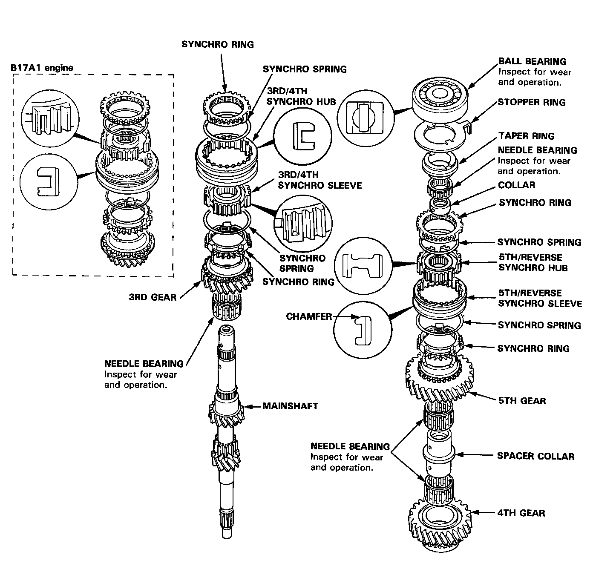
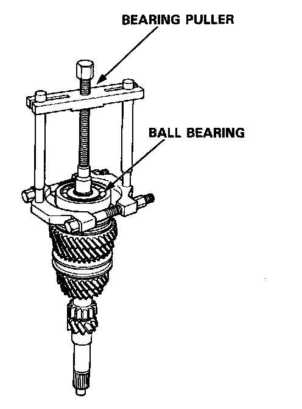
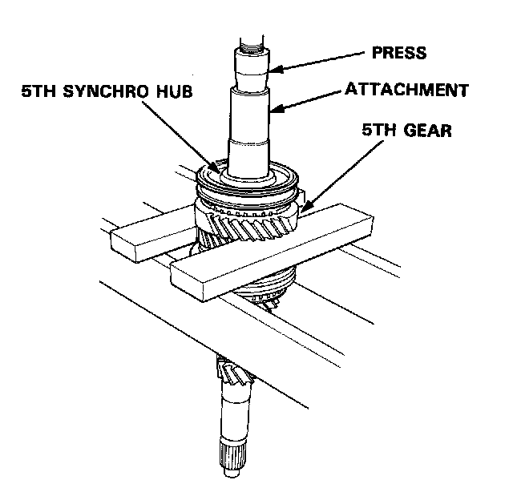
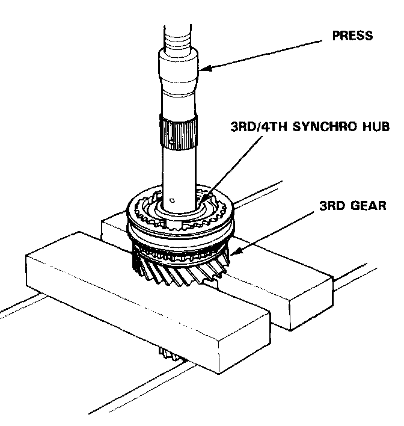
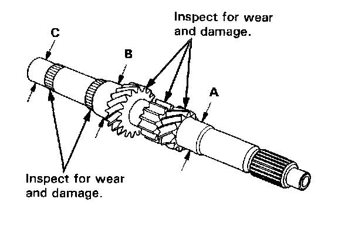
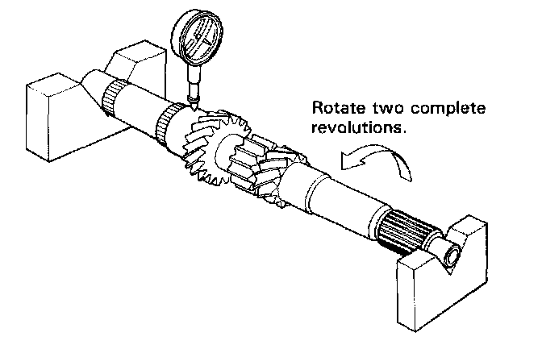
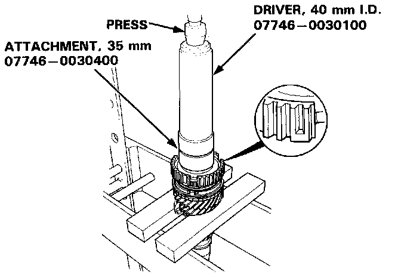
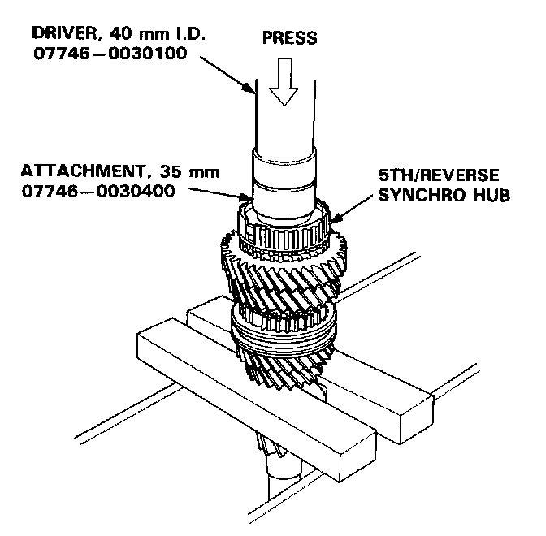
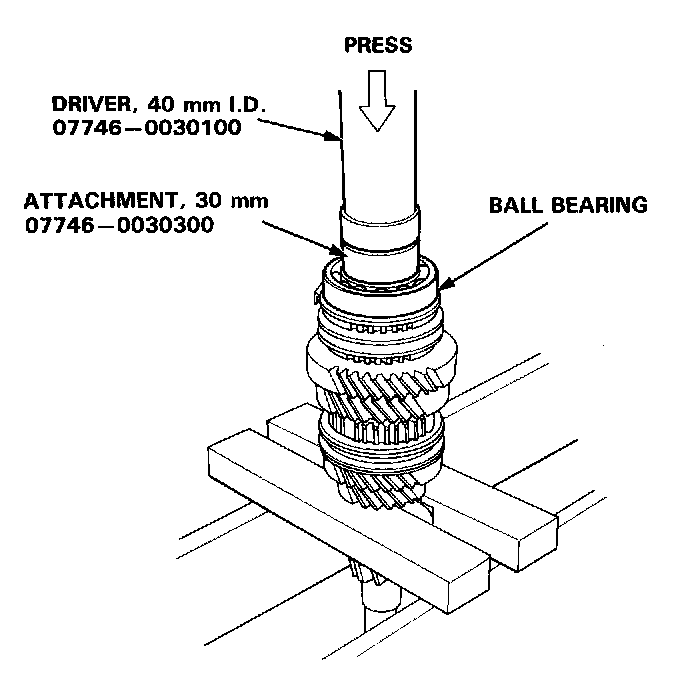

Disassembly and Reassembly

NOTE: The 3rd/4th and 5th synchro hubs are installed with a press. Prior to reassembling, clean all the parts in solvent, dry them and apply lubricant to any contact surfaces. The 3rd/4th and 5th synchro hubs, however, should be installed with a press before lubricating them.
Disassembly
CAUTION: Remove the synchro hubs using a press and steel blocks as shown. Use of a jaw-type puller can cause damage to the gear teeth.

1. Remove the ball bearing using the bearing puller as shown.

2. Support 5th gear on steel blocks as shown and press the mainshaft out of the 5th synchro hub.

3. Support 3rd gear on steel blocks and press the mainshaft out of the 3rd/4th synchro hub.
Inspection

1. Inspect the surface and bearing surface for wear and damage, then measure the mainshaft at points A, B, and C.
Standard:
A: 27.977-27.990 mm (1.1015-1.1020 in)
B: 37.984-38.000 mm (1.4954-1.4960 in)
C: 27.987-28.000 mm (1.1018-1.1024 in)
Service Limit:
A: 27.930 mm (1.0996 in)
B: 37.930 mm (1.4933 in)
C: 27.940 mm (1.1000 in)
If any part of the mainshaft is less than the service limit, replace it with a new one.

2. Inspect for runout.
Standard: 0.02 mm (0.001 in)
Service Limit: 0.05 mm (0.002 in)
NOTE: Support the mainshaft at both ends as shown.
If the runout exceeds the service limit, replace the mainshaft with a new one.
Reassembly
CAUTION:
- Press the 3rd/4th and 5th synchro hubs on the main-shaft without lubrication.
- When installing the 3rd/4th and 5th synchro hubs, support the shaft on steel blocks and install the synchro hubs using a press.
- Install the 3rd/4th and 5th synchro hubs with a maximum pressure of 20 kN (2,000 kg, 4,400 lbs).

1. Support 2nd gear on steel blocks as shown, then install the 3rd/4th synchro hub using the special tools and a press as shown.

2. After installing, check the operation of the 3rd/4th synchro hub set.
3. Install the 5th/reverse synchro hub using the special tools and a press as shown.

4. Install the ball bearing using the special tools and a press as shown.